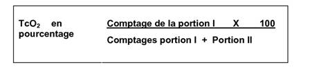
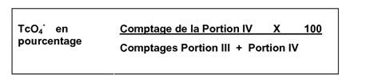
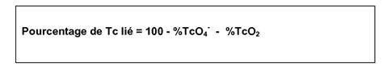

RÉSUMÉ DES CARACTÉRISTIQUES DU PRODUIT
ANSM - Mis à jour le : 20/09/2012
Médronate DRAXIMAGE 10 mg, trousse pour préparation radiopharmaceutique
2. COMPOSITION QUALITATIVE ET QUANTITATIVE
Chaque flacon contient 10 mg d'acide médronique.
La trousse ne contient pas le radionucléide.
Pour la liste complète des excipients, voir rubrique 6.1.
Trousse pour préparation radiopharmaceutique.
A reconstituer avec une solution de pertechnétate de sodium (99mTc) pour injection (non fournie dans cette trousse).
Le médicament se présente sous la forme d'une petite pastille blanche lyophilisée susceptible de se réduire en poudre.
4.1. Indications thérapeutiques
Ce médicament est à usage diagnostic uniquement.
Après reconstitution au moyen d'une solution de pertechnétate de sodium (99mTc), le produit est utilisé en scintigraphie osseuse pour la détection de zones dont l'ostéogénèse est altérée, du fait de:
Néoplasmes:
· Détection, stadification et évaluation de la réponse thérapeutique des tumeurs osseuses primaires (par ex. sarcome d'Ewing, ostéosarcome);
· Détection et suivi des métastases osseuses.
Lésions non néoplastiques:
· Pour faciliter l'évaluation de:
o Ostéomyélite;
o Nécrose avasculaire;
o Maladie de Paget;
o Fractures de fatigue, fracture longitudinale du tibia;
o Prothèses articulaires descélées ou infectées;
o Algodystrophie;
o Viabilité des greffes osseuses.
Des examens supplémentaires peuvent être nécessaires étant donné que les zones d'ostéogénèse altérée sont détectées avec une grande sensibilité mais une faible spécificité.
4.2. Posologie et mode d'administration
Posologie
Adultes: L'activité optimale de médronate de technétium (99mTc) à injecter n'a pas été systématiquement étudiée. L'activité du produit à injecter varie en fonction des caractéristiques du patient, de la procédure d'imagerie et de l'équipement utilisé pour la scintigraphie.
L'activité moyenne administrée en une seule injection intraveineuse est de 500 MBq (300 à 740 MBq), conformément aux recommandations de l'Association Européenne de Médecine Nucléaire (EANM) en 2003. Néanmoins, d'autres activités peuvent être justifiées. Pour les patients très obèses, une activité allant de 11 à 13 MBq / kg de masse corporelle peut être nécessaire, tel que recommandé par la Société Américaine de Médecine Nucléaire (SNM) en 2003.
Nouveau-nés, nourrissons, enfants et adolescents: L'activité pédiatrique optimale de médronate de technétium (99mTc) à injecter n'a pas été systématiquement étudiée. L'activité à administrer à un enfant devrait être une fraction de l'activité pour adulte, calculée selon le poids corporel tel que décrit dans le tableau ci-dessous:
Groupe de travail pédiatrique EANM - Table d'activité pédiatrique
|
Poids |
% de l'activité |
Poids |
% de l'activité |
Poids |
% de l'activité |
|
3 kg |
10% |
22 kg |
50% |
42 kg |
78% |
|
4 kg |
14% |
24 kg |
53% |
44 kg |
80% |
|
6 kg |
19% |
26 kg |
56% |
46 kg |
82% |
|
8 kg |
23% |
28 kg |
58% |
48 kg |
85% |
|
10 kg |
27% |
30 kg |
62% |
50 kg |
88% |
|
12 kg |
32% |
32 kg |
65% |
52-54 kg |
90% |
|
14 kg |
36% |
34 kg |
68% |
56-58 kg |
92% |
|
16 kg |
40% |
36 kg |
71% |
60-62 kg |
96% |
|
18 kg |
44% |
38 kg |
73% |
64-66 kg |
98% |
|
20 kg |
46% |
40 kg |
76% |
68 kg |
99% |
Afin d'obtenir des images de qualité satisfaisante chez l'enfant, une activité minimale de 20 à 40 MBq est nécessaire.
Patients de 65 ans et plus: La nécessité d'ajuster l'activité de médronate de technétium (99mTc) injectable chez les sujets âgés n'a pas été systématiquement évaluée. La diminution de la fonction rénale (voir ci-dessous) et la réduction de l'ostéogénèse chez les personnes âgées peuvent avoir un impact sur la fixation, la distribution ou l'élimination du médronate de technétium (99mTc) injectable.
Patients en insuffisance rénale: La nécessité d'ajuster l'activité de médronate de technétium (99mTc) injectable chez les patients souffrant d'insuffisance rénale n'a pas été systématiquement évaluée.
Patients souffrant de troubles hépatiques: La nécessité d'ajuster l'activité de médronate de technétium (99mTc) injectable chez les patients souffrant d'insuffisance hépatique n'a pas été évaluée systématiquement.
Etant donné que le médronate de technétium (99mTc) est principalement éliminé par les reins, il est peu probable qu'il soit nécessaire de modifier l'activité administrée du produit en cas d'insuffisance hépatique.
Mode d'administration et examen scintigraphique:
Voir rubrique 4.4 pour la préparation du patient.
Ce médicament doit être reconstitué avant l'emploi. Lorsqu'il est reconstitué avec une solution de pertechnétate de sodium (99mTc), la solution isotonique transparente qui en résulte a un pH compris entre 6,5 et 7,5.
Ce produit ne doit être administré que par voie intraveineuse.
Ce médicament doit être administré exclusivement par du personnel autorisé (voir rubrique 4.4).
Etant donné le risque de lésions tissulaires, il faut absolument éviter l'injection extravasculaire de ce produit radioactif.
Les paramètres et procédures d'acquisition des images varient en fonction de l'indication clinique et du type d'équipement disponible. Le délai optimal entre l'injection et l'obtention des images n'a pas été systématiquement évalué. Il est possible d'obtenir des images précocement après l'injection (selon la procédure de scintigraphie osseuse en 3 phases) pour rechercher une anomalie du flux sanguin vers certaines parties du squelette et, dans les minutes qui suivent, une éventuelle fixation intense au niveau de certaines parties du squelette.
Des images sont généralement obtenues entre 2 et 5 heures après l'injection de médronate de technétium (99mTc). Sur les images acquises plus tardivement (6 à 24 h après injection) le rapport clésion/bruit de fond est plus élevé, ce qui peut permettre une meilleure évaluation de la fixation du produit au squelette du petit bassin, si celui-ci est masqué par l'activité dans la vessie sur les images obtenues entre 2 et 5 h après injection. L'acquisition des images 6 à 24 heures après injection peut être particulièrement utile chez les patients atteints d'insuffisance rénale, de troubles de la circulation périphérique ou de rétention urinaire.
Voir la rubrique 12 pour des instructions détaillées concernant l'administration et l'utilisation adéquates de ce produit.
Hypersensibilité à la substance active ou à l'un des excipients.
4.4. Mises en garde spéciales et précautions d'emploi
Pour tous les patients: l'exposition aux radiations doit être justifiée par le bénéfice tiré de l'information diagnostique obtenue avec la plus faible irradiation possible.
En pédiatrie (enfants de moins de 18 ans): il faut prendre en considération le fait que la dose efficace par MBq est plus élevée chez les enfants que chez les adultes (voir rubrique 11). Une attention particulière doit être portée à l'exposition aux radiations des épiphyses qui est relativement plus élevée lorsque les os sont en cours de croissance.
Préparation du patient
Le patient doit être bien hydraté avant le début de l'examen. Il doit être encouragé à vider sa vessie aussi souvent que possible au cours des premières heures suivant l'examen afin d'en réduire l'irradiation.
Afin de limiter la quantité de produit présente dans la masse musculaire, tout effort physique doit être évité entre l'injection du produit et la fin de l'examen.
Mises en garde générales
L'administration sous-cutanée accidentelle ou par inadvertance de médronate de technétium (99mTc) doit être évitée; en effet, il a été reconnu que les bisphosphonates de technétium (99mTc) peuvent provoquer une inflammation périvasculaire.
Ce produit radiopharmaceutique doit être réceptionné, utilisé et administré uniquement par des personnes autorisées et dans un environnement clinique agréé. Sa réception, son entreposage, son utilisation, son transfert et son élimination sont soumis aux règlementations et/ou autorisations adéquates des organismes officiels locaux compétents. Les produits radiopharmaceutiques doivent être préparés dans le respect des règles de sécurité en matière de radiation et des exigences de qualité propres aux produits pharmaceutiques. Il convient de prendre les mesures antiseptiques adéquates dans le respect des Bonnes Pratiques de Fabrication applicables aux produits pharmaceutiques.
La possibilité de réactions d'hypersensibilité, y compris de réactions anaphylactiques / anaphylactoïdes graves, doit toujours être envisagée. En cas de réaction d'hypersensibilité, l'administration du médicament doit être interrompue immédiatement, et, si nécessaire, un traitement par voie intraveineuse doit être effectué. Etant donné la nécessité d'agir rapidement en cas d'urgence, il convient de veiller à ce que les équipements de réanimation et les médicaments nécessaires au traitement soient facilement disponibles.
4.5. Interactions avec d'autres médicaments et autres formes d'interactions
Certaines interactions potentielles ont été décrites. Une accumulation extra osseuse accrue du traceur radioactif a été signalée avec les produits contenant du fer, les bisphosphonates à forte doses, plusieurs médicaments cytostatiques et immunosuppresseurs, les antiacides contenant de l'aluminium, les produits de contraste pour radiographie, des antibiotiques, et anti-inflammatoires, le gluconate de calcium ou l'héparine calcique injectables et l'acide γ-amino-caproïque.
Etant donné que l'étidronate inhibe la fixation du médronate par les os, la scintigraphie osseuse doit être réalisée soit avant soit 2 à 4 semaines au moins après l'administration d'étidronate.
Femmes en âge de procréer
Lorsqu'il est nécessaire d'administrer des médicaments radiopharmaceutiques à des femmes susceptibles de tomber enceintes, il convient de s'informer toujours d'une éventuelle grossesse. Jusqu'à preuve du contraire, toute femme n'ayant pas eu ses règles doit être considérée comme enceinte. En cas de doute, il convient d'envisager des techniques alternatives n'impliquant pas l'emploi de radiations ionisantes.
Femmes enceintes
Les procédures utilisant les radionucléides chez les femmes enceintes entraînent également une irradiation du fœtus. Seuls les examens absolument nécessaires doivent être effectués durant la grossesse, lorsque le bénéfice probable dépasse le risque encouru par la mère et le fœtus.
Selon des données publiées, l'administration de 500 MBq de médronate de technétium (99mTc) à une patiente dont les os présentent un taux de fixation normal entraîne une dose de 3,15 mGy absorbée par l'utérus. Cette dose passe à 1,45 mGy chez les patientes dont la fixation osseuse est élevée ou atteintes d'insuffisance rénale importante. Des rapports publiés relatifs à des patientes enceintes estiment les doses de radiations absorbées par le fœtus entre 2,6 et 4,6 µGy/MBq soit de 1,3 à 2,3 mGy pour 500 MBq administrés. Bien que ce niveau d'irradiation ait une faible probabilité de représenter un risque accru pour le fœtus, l'utilisation de Médronate DRAXIMAGE durant la grossesse est déconseillée sauf en cas de nécessité.
Mères allaitantes
Avant d'administrer un médicament radiopharmaceutique à une mère qui allaite, il convient d'envisager de façon raisonnable la possibilité de repousser l'examen jusqu'à la fin de l'allaitement, ou s'assurer, dans le cas contraire, que le médicament radiopharmaceutique choisi est le plus approprié compte tenu de l'éventuelle sécrétion de la radioactivité dans le lait maternel.
Si l'administration est jugée nécessaire, l'allaitement doit être interrompu pendant 12 heures et le lait tiré pendant cette période doit être éliminé.
4.7. Effets sur l'aptitude à conduire des véhicules et à utiliser des machines
Les effets sur l'aptitude à conduire des véhicules et à utiliser des machines n'ont pas été étudiés.
Pour tous les patients: l'exposition aux radiations doit être justifiée par le bénéfice des informations diagnostiques attendues, qui doivent être obtenues avec la plus faible exposition possible aux radiations. L'exposition aux radiations ionisantes peut induire des cancers ou développer des déficiences héréditaires. La probabilité de ces effets est faible. Après l'administration de l'activité maximale recommandée pour ce produit, la dose efficace est d'environ 4 mSv.
En pédiatrie (Enfants de moins de 18 ans): il convient de prendre en considération le fait que la dose efficace par MBq est plus élevée chez les enfants que chez les adultes (voir rubrique 11).
Des réactions d'hypersensibilité, y compris des cas très rares (< 1/10.000) de chocs anaphylactiques potentiellement mortels, ont été signalées suite à l'injection de médronate de technétium (99mTc). Ces réactions se sont produites dans les 8 à 48 heures suivant l'administration de médronate. Bien que différents dans leur présentation, les cas signalés comprenaient un ou plusieurs des symptômes suivants: urticaire généralisé, oligurie et jaunisse, vascularite, symptômes indiquant un érythème multiple, et affection systémique grave avec nausées, maux de têtes, frissons, toux, myalgies et fièvre.
Des cas d'urticaire local ou généralisé avec démangeaison et irritation du derme ont été signalés. La réaction commence généralement plusieurs heures après l'injection et peut durer jusqu'à 48 heures. Un traitement au moyen d'un antihistaminique H1 non sédatif peut être utile.
D'autres réactions ont été signalées, telles que: chute de la pression artérielle et symptômes d'hypotension, nausée, vomissements, vasodilatation cutanée, mal de tête, malaise, œdèmes des extrémités et arthralgie.
En cas d'administration d'une activité excessive de médronate de technétium (99mTc) par injection, la dose absorbée par le patient doit être réduite autant que possible en augmentant l'élimination de la radioactivité hors du corps par diurèse forcée avec mictions fréquentes.
5. PROPRIETES PHARMACOLOGIQUES
5.1. Propriétés pharmacodynamiques
Groupe pharmacothérapeutique: médicament radiopharmaceutique à usage dignostique; squelette; composés marqués au technétium (99mTc), code ATC: V09BA02
Administré aux doses usuelles, Médronate DRAXIMAGE 10 mg ne présente pas d'effets pharmacodynamiques détectables cliniquement et/ou analytiquement mesurables.
5.2. Propriétés pharmacocinétiques
Dans les 3 minutes suivant l'injection de médronate de technétium (99mTc), on note une fixation dans les tissus mous et une accumulation rénale. Au fur et à mesure que le produit quitte ces zones, on constate une accumulation progressive dans le squelette en commençant par les vertèbres lombaires et la région du bassin. La clairance du sang s'effectue en trois phases: 1 - phase rapide (T1/2=3,5 min.), 2 - phase intermédiaire (T1/2=27 min.) et 3 - phase lente (T1/2=144 min.). La phase rapide correspond au transfert de la substance radioactive depuis la zone intravasculaire vers la zone extravasculaire, la phase intermédiaire correspond à la fixation par le squelette. La phase lente correspond probablement à la libération du médronate de technétium (99mTc) à partir d'un complexe lié aux protéines.
Environ 50% de l'activité injectée s'accumule dans le squelette. L'accumulation osseuse maximale est atteinte 1 heure après l'injection et reste pratiquement constante jusqu'à 72 heures. Le complexe circulant non-lié est éliminé par les reins. Le pic d'activité au niveau des reins est atteint après environ 20 minutes. Au bout d'une heure, lorsque la fonction rénale est normale, environ 32% de la quantité totale du complexe non-lié a été filtré par les glomérules. Ce pourcentage passe à 47,5% après 2 heures et 60% après 6 heures. La quantité de phosphonate, dans l'intervalle d'activité recommandé, n'a pas d'impact sur l'excrétion rénale. La quantité éliminée via l'intestin est négligeable.
Le niveau d'accumulation dans le squelette dépend de l'apport sanguin et du renouvellement osseux. Le taux de rétention au niveau du corps entier a été mesuré à 31,6 ± 5% chez le sujet normal, 38,2 ± 7% en cas de métastases multiples, 49 ± 11% en cas d'hyperparathyroïdie primaire et 45% en cas d'ostéoporose.
5.3. Données de sécurité préclinique
Des effets secondaires n'ont été observés chez l'animal qu'à des doses massiques largement supérieures à celles utilisées chez l'homme. L'administration répétée de très fortes doses de bisphosphonates peut provoquer des troubles de la minéralisation osseuse. Aucune étude des effets à long terme mutagènes ou carcinogènes n'a été réalisée.
Acide p-aminobenzoïque, chlorure stanneux dihydraté, acide chlorhydrique 1N (pour ajustement du pH), hydroxyde de sodium (pour ajustement du pH).
La réaction de marquage par le technétium (99mTc) nécessaire à la préparation du complexe méthylène bisphosphonate (99mTc) nécessite le maintien de l'étain à l'état divalent. La présence de composés oxydants dans la solution de pertechnétate (99mTc) peut avoir un effet défavorable sur le marquage.
Ce produit ne doit pas être mélangé avec d'autres médicaments à l'exception de ceux mentionnés à la rubrique 12.
2 ans
Après reconstitution: 12 heures
6.4. Précautions particulières de conservation
Produit lyophilisé: ne pas mettre au réfrigérateur, ne pas congeler.
Produit reconstitué: à conserver à une température ne dépassant pas 25°C. Ne pas mettre au réfrigérateur, ne pas congeler.
Le stockage du produit doit se faire en conformité avec les règlements nationaux relatifs aux matières radioactives.
Ce médicament ne doit pas entrer en contact avec l'air.
6.5. Nature et contenu de l'emballage extérieur
Chaque flacon contient 13,33 mg de poudre.
Flacon en verre multi-doses Type 1 de 10 mL de volume fermé avec un bouchon en caoutchouc butylique Type I. Médronate DRAXIMAGE 10 mg est fourni en boîtes de 5, 10, 30 ou 100 flacons.
Toutes les présentations peuvent ne pas être commercialisées.
6.6. Précautions particulières d’élimination et de manipulation
Tout produit non utilisé ou déchet doit être éliminé conformément à la réglementation en vigueur.
L'administration de produits radiopharmaceutiques présente un risque pour les tiers, lié aux radiations externes et à la contamination par le contact avec les urines, les vomissements etc. Il convient donc de prendre les protections antiradiations appropriées conformément aux réglementations nationales en vigueur
7. TITULAIRE DE L’AUTORISATION DE MISE SUR LE MARCHE
DRAXIMAGE (UK) LIMITED
125 OLD BROAD STREET
26TH FLOOR
EC2N 1AR
LONDON
ROYAUME UNI
8. NUMERO(S) D’AUTORISATION DE MISE SUR LE MARCHE
· 576 485-4 ou 34009 576 485 4 1: 13.1 mg de poudre en flacon (verre), boîte de 5 flacons.
· 576 486-0 ou 34009 576 486 0 2: 13.1 mg de poudre en flacon (verre), boîte de 10 flacons.
· 576 487-7 ou 34009 576 487 7 0: 13.1 mg de poudre en flacon (verre), boîte de 30 flacons.
· 576 488-3 ou 34009 576 488 3 1: 13.1 mg de poudre en flacon (verre), boîte de 100 flacons.
9. DATE DE PREMIERE AUTORISATION/DE RENOUVELLEMENT DE L’AUTORISATION
[à compléter par le titulaire]
10. DATE DE MISE A JOUR DU TEXTE
[à compléter par le titulaire]
La dose efficace (E) résultant de l'injection de médronate de technétium (99mTc) est de 0,00619 mSv/MBq chez les femmes et 0,00475 mSv/MBq chez les hommes. L'activité recommandée pour l'adulte de 8 MBq/kg chez une femme de 70 kg correspond à une dose efficace de 3,5 mSv; chez un homme de 80 kg, elle correspond à une dose efficace de 3,0 mSv.
Dose efficace chez les adultes
|
|
Dose |
E par MBq |
Poids |
E (mSv) |
|
Dames |
8 |
0,00619 |
70 |
3,47 |
|
Hommes |
8 |
0,00475 |
80 |
3,04 |
Dose efficace (mSv/MBq) chez les enfants
|
0 |
1 an |
5 ans |
10 ans |
15 ans |
|
0,0631 |
0,0263 |
0,0142 |
0,00904 |
0,0059 |
La dose efficace par MBq est plus élevée chez les patients atteints d'insuffisance rénale et chez les patients à forte fixation osseuse.
L'organe cible est la surface osseuse (0,063 mGy/MBq). Pour une activité administrée de 600 MBq, la dose de radiation absorbée par la surface osseuse est de 37,8 mGy.
L'organe critique est la paroi de la vessie (0,048 mGy/MBq). Pour une activité administrée de 600 MBq, la dose de radiation absorbée par la paroi de la vessie est de 28,8 mGy.
Le tableau ci-dessous illustre la dosimétrie calculée selon la Publication 80 (International 1999) de la CIPR (Commision internationale pour la Protection radiologique).
Doses de radiations absorbées: 99mTc-phosphate et phosphonate (mGy / MBq)
|
|
Dose absorbée par unité d'activité administrée (mGy / MBq) |
||||
|
Organe |
Adulte |
15 ans |
10 ans |
5 ans |
1 an |
|
Glandes surrénales |
0,0021 |
0,0027 |
0,0039 |
0,0058 |
0,011 |
|
Paroi de la vessie |
0,048 |
0,060 |
0,088 |
0,073 |
0,13 |
|
Surfaces osseuses |
0,063 |
0,082 |
0,13 |
0,22 |
0,53 |
|
Cerveau |
0,0017 |
0,0021 |
0,0028 |
0,0043 |
0,0061 |
|
Sein |
0,00071 |
0,00089 |
0,0014 |
0,022 |
0,0042 |
|
Vésicule biliaire |
0,0014 |
0,0019 |
0,0035 |
0,0042 |
0,0067 |
|
Tube digestif |
|
|
|
|
|
|
Paroi de l'estomac |
0,0012 |
0,0018 |
0,0025 |
0,0035 |
0,0066 |
|
Intestin grêle |
0,0023 |
0,0029 |
0,0044 |
0,0053 |
0,0095 |
|
Côlon |
0,0027 |
0,0034 |
0,0053 |
0,0061 |
0,011 |
|
Côlon droit |
0,0019 |
0,0024 |
0,0039 |
0,0051 |
0,0089 |
|
Côlon gauche |
0,0038 |
0,0047 |
0,0072 |
0,0075 |
0,013 |
|
Cœur |
0,0012 |
0,0016 |
0,0023 |
0,0034 |
0,0060 |
|
Reins |
0,0073 |
0,0088 |
0,012 |
0,018 |
0,032 |
|
Foie |
0,0012 |
0,0016 |
0,0025 |
0,0036 |
0,0066 |
|
Poumons |
0,0013 |
0,0016 |
0,0024 |
0,0036 |
0,0068 |
|
Muscles |
0,0019 |
0,0023 |
0,0034 |
0,0044 |
0,0079 |
|
Œsophage |
0,0010 |
0,0013 |
0,0019 |
0,0030 |
0,0053 |
|
Ovaires |
0,0036 |
0,0046 |
0,0066 |
0,0070 |
0,012 |
|
Pancréas |
0,0016 |
0,0020 |
0,0031 |
0,0045 |
0,0082 |
|
Moelle rouge |
0,0092 |
0,01 |
0,017 |
0,033 |
0,067 |
|
Peau |
0,0010 |
0,0013 |
0,0020 |
0,0029 |
0,0055 |
|
Rate |
0,0014 |
0,0018 |
0,0028 |
0,0045 |
0,0079 |
|
Testicules |
0,0024 |
0,0033 |
0,0055 |
0,0058 |
0,011 |
|
Thymus |
0,0010 |
0,0013 |
0,0019 |
0,0030 |
0,0053 |
|
Thyroïde |
0,0013 |
0,0016 |
0,0023 |
0,0035 |
0,0056 |
|
Utérus |
0,0063 |
0,0076 |
0,012 |
0,011 |
0,018 |
|
Autres organes |
0,0019 |
0,0023 |
0,0034 |
0,0045 |
0,0079 |
|
Dose efficace |
0,0057 |
0,0070 |
0,0110 |
0,0140 |
0,0270 |
La dose efficace suite à l'administration de 500 MBq de médronate de technétium (99mTc), Médronate DRAXIMAGE, est de 2,85 mSv (pour un individu pesant 70 kg).
Après l'administration d'une activité de 500 MBq, la dose absorbée au niveau de l'organe cible (surfaces osseuses) est de 31,5 mGy et de 24,0 mGy pour l'organe critique (paroi de la vessie).
12. INSTRUCTIONS POUR LA PREPARATION DES RADIOPHARMACEUTIQUES
REMARQUE: Se conformer en permanence à des mesures d'asepsie et prendre les précautions nécessaires pour réduire au minimum la radioexposition par l'utilisation de vêtements de protection appropriés. Porter des gants étanches tout au long de la procédure de préparation.
Avant de procéder à la reconstitution du contenu du flacon, l'utilisateur doit procéder à une inspection sommaire du flacon afin de s'assurer qu'il n'y a aucune fissure et que l'aspect solide de la pastille est intact, confirmant ainsi que le produit est toujours conservé sous pression réduite.
Ce médicament ne doit pas entrer en contact avec l'air.
Méthode de reconstitution du médronate de technétium (99mTc) injectable:
a) Retirer l'embout protecteur du flacon de réaction et nettoyer l'obturateur avec un tampon imbibé d'alcool ou un agent bactériostatique approprié.
b) Placer le flacon de réaction dans un blindage de plomb approprié (épaisseur minimale 3 mm) et qui est bien fermé par un bouchon de plomb. Prélever, au moyen d'une seringue blindée, 2 à 10 mL de pertechnate (99mTc) de sodium stérile et apyrogène Ph. Eur.
c) A l'aide d'une seringue blindée, ajouter aseptiquement 740 à 18500 MBq de pertechnate (99mTc) de sodium au contenu du flacon de réaction. Ne pas utiliser du pertechnate (99mTc) de sodium contenant un agent oxydant.
d) Placer le bouchon de plomb sur le blindage du flacon de réaction et agiter le flacon de réaction blindé jusqu'à ce que son contenu soit complètement dissous. Vérifier que la solution est limpide et ne contient pas de particules avant de continuer.
e) Mesurer la radioactivité de la préparation au moyen d'un compteur approprié. Inscrire les données relatives à la radioactivité sur l'étiquette qui porte le symbole de mise en garde contre la radioactivité, et apposer l'étiquette sur le flacon de réaction.
f) La pureté radiochimique de la préparation finale devrait être déterminée avant administration au patient. La pureté radiochimique ne doit pas être inférieure à 95%.
g) Effectuer aseptiquement les prélèvements en vue de l'administration de la solution, à l'aide d'une seringue et d'une aiguille stériles. Etant donné que les flacons renferment de l'azote, il faut éviter d'y introduire de l'air. Par conséquent, si l'on doit effectuer plusieurs prélèvements, il faut faire en sorte que le moins d'air ambiant possible pénètre dans le flacon.
h) Ne pas conserver la préparation marquée à plus de 25°C, au réfrigérateur ni au congélateur. Utiliser la préparation marquée dans les 12 heures. Pendant sa période de validité, la conserver dans un blindage en plomb muni de son bouchon de plomb.
Le pH de la solution est compris entre 6,5 et 7,5.
Méthode de contrôle de la pureté radiochimique
La procédure suivante décrit une série d'étapes simples pour réaliser la chromatographie. Les étapes h et i décrivent deux méthodes: une pour la détermination du pertechnétate libre dans un mélange de technétium lié et réduit, et l'autre pour la détermination du technétium réduit dans un mélange de technétium lié et de pertechnétate. La méthode chromatographique sur couche mince requiert:
Une phase solide: ITLC-SG
Solvant A: 136 mg/mL d'acétate de sodium pour la détermination du technétium réduit
Solvant B: méthyléthylcétone pour la détermination du pertechnate
a) Ajouter 1 mL du solvant requis dans une éprouvette de 18 mm x 150 mm. Boucher l'éprouvette et laisser l'atmosphère de l'éprouvette se saturer de solvant pendant une minute.
b) Déposer une goutte (environ 0,02 mL) de la solution radioactive sur une plaque chromatographique de 1 cm sur 10 cm sur le point de départ (origine) marqué au crayon (marquer l'origine à 1 cm d'une des extrémités de la plaque). Pour ce faire, utiliser simplement une seringue à tuberculine standard d'une capacité de 1 mL munie d'une aiguille de calibre 25G et déposer une petite goutte. Jeter la seringue et l'aiguille après usage. Il est également possible d'utiliser une micropipette capillaire jetable de 20 microlitres (par ex. Fisher Scientific 21-164-2D) pour délivrer un volume de 0,02 mL.
c) Sécher immédiatement la tache en la soumettant à un flux léger d'azote. Ne pas utiliser de l'air comprimé car son emploi peut causer la formation de pertechnétate.
d) Développer le chromatogramme en le plaçant, l'origine placée vers le bas, dans le solvant contenu dans l'éprouvette dont l'atmosphère a été préalablement saturée. Boucher l'éprouvette et la maintenir droite, idéalement dans un porte-éprouvette. Le développement prend environ 10 minutes pour les plaques ITLC-SG.
e) Une fois que le front du solvant a atteint le sommet de la plaque, retirer celle-ci de l'éprouvette à l'aide d'une pince et la laisser sécher. On peut sécher les plaques à la température ambiante en les plaçant, côté radioactif vers le haut, sur un support (tampon) jetable non poreux.
f) Dans l'acétate de sodium (136 mg/mL), le TcO2 réduit reste à l'origine ou Rf = 0, tandis que le TcO4- lié et le TcO4- libre migrent avec le front de l'éluant (Rf = 0,85-1,0).
g) Dans le méthyléthylcétone, les fractions de technétium réduit et de technétium lié demeurent à l'origine tandis le pertechnétate libre TcO4- migre avec le front (Rf = 0,85-1,0).
h) Méthode A - Détermination du technétium réduit avec l'aide du solvant acétate de sodium (136 mg/mL):
Couper la plaque séchée à 3 cm de l'origine. La partie courte est marquée "Portion I" et la longue est marquée "Portion II". Mesurer la radioactivité de chacune des portions à l'aide d'un compteur approprié et déterminer le pourcentage de technétium réduit d'après la formule suivante:
|
 |
i) Méthode B - Détermination du pertechnétate avec l'aide du méthyléthylcétone:
Couper la plaque séchée à 2 cm du front de solvant. La partie courte est marquée "Portion IV" et la longue "Portion III". Mesurer la radioactivité de chacune des portions dans un compteur approprié et déterminer le pourcentage de pertechnétate libre d'après la formule suivante:
|
 |
|
REMARQUE: |
IL EST IMPORTANT DE NOTER QUE LES PLAQUES UTILISEES POUR LA METHODE A ET CELLES UTILISEES POUR LA METHODE B SONT COUPEES DE FACON DIFFERENTE. |
j) Déterminer la quantité de technétium lié d'après la formule suivante:
|
 |
k) Conserver toutes les plaques radioactives durant 48 heures avant de les éliminer en tant que déchet non radioactif. Traiter les solvants utilisés pour la chromatographie de la même façon.
L'administration de produits radiopharmaceutiques présente des risques pour l'entourage du patient, en raison de l'irradiation externe ou de la contamination par les urines, les vomissements etc. Par conséquent, il faut prendre des mesures de protection contre les radiations conformément aux réglementations nationales.
Tout produit non utilisé ou déchet doit être éliminé conformément à la réglementation en vigueur.
Liste I.
Médicament réservé à l'usage hospitalier.